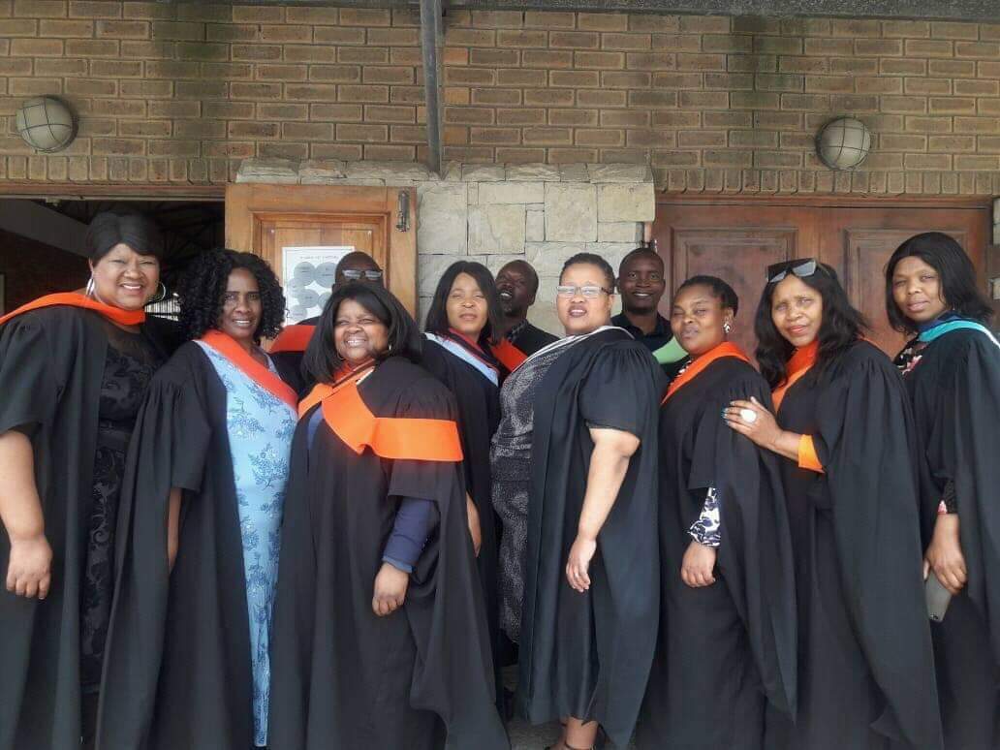
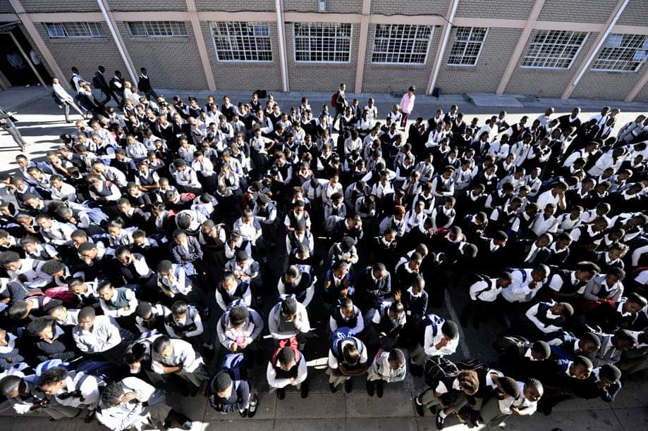

CONTACT
SERVICE
ABOUT
HOME
Matthew Goniwe Memorial high School is Located in City of Cape Town Western-Cape.
This School is a valid, Registered and prosperous school under the leadership of the principal MT NGUMBE,37 Teachers and 1235 learners

Teachers

Learners
Copyright 2021 Babalwa Magada